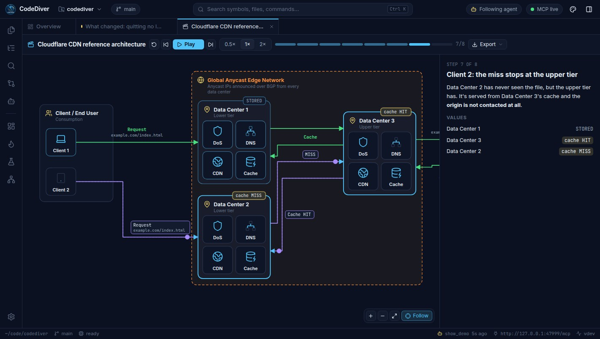
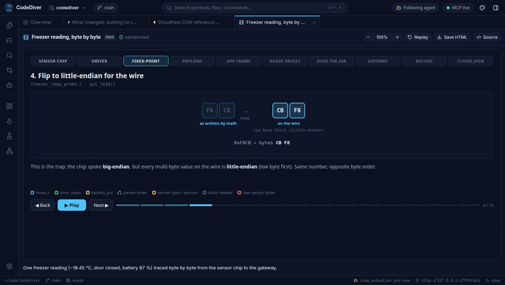
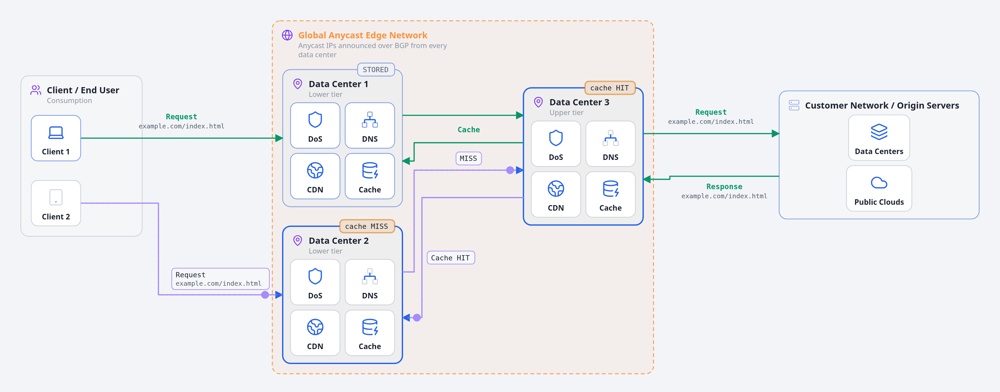
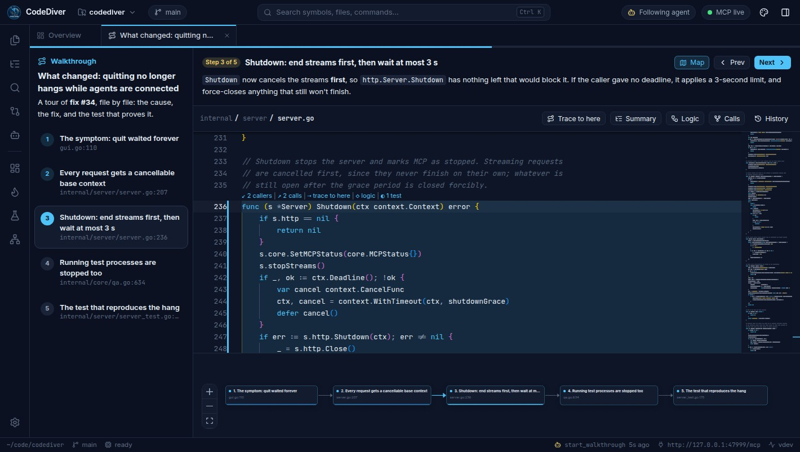
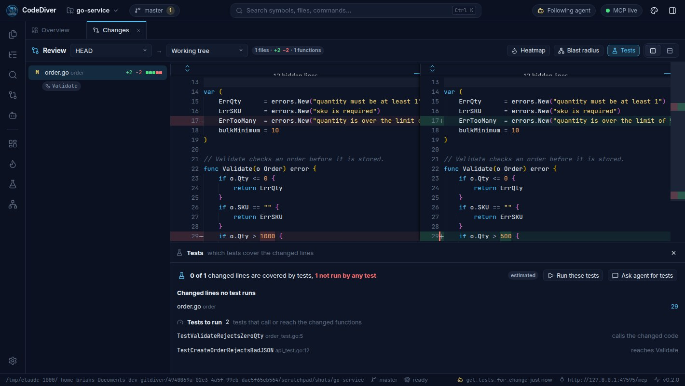
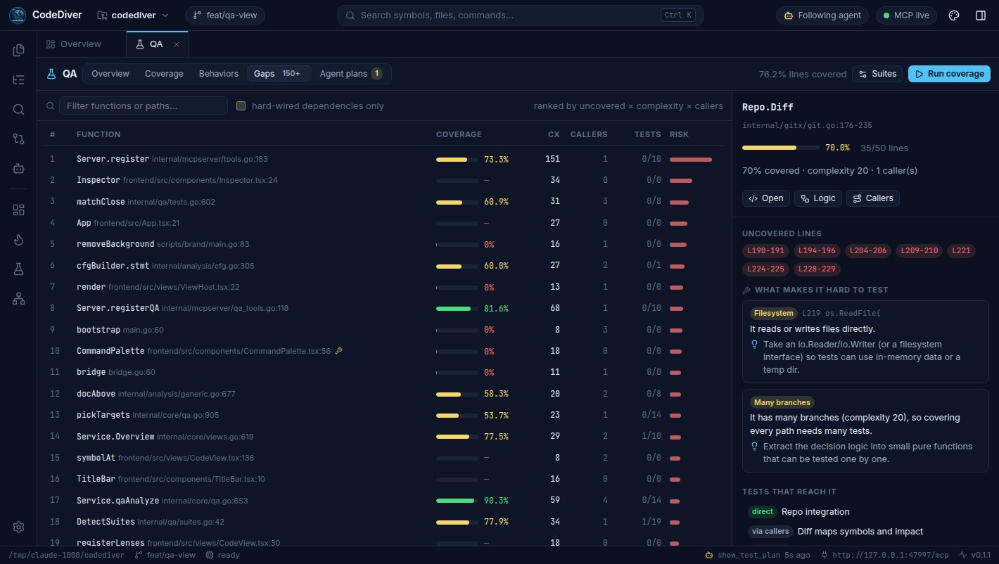
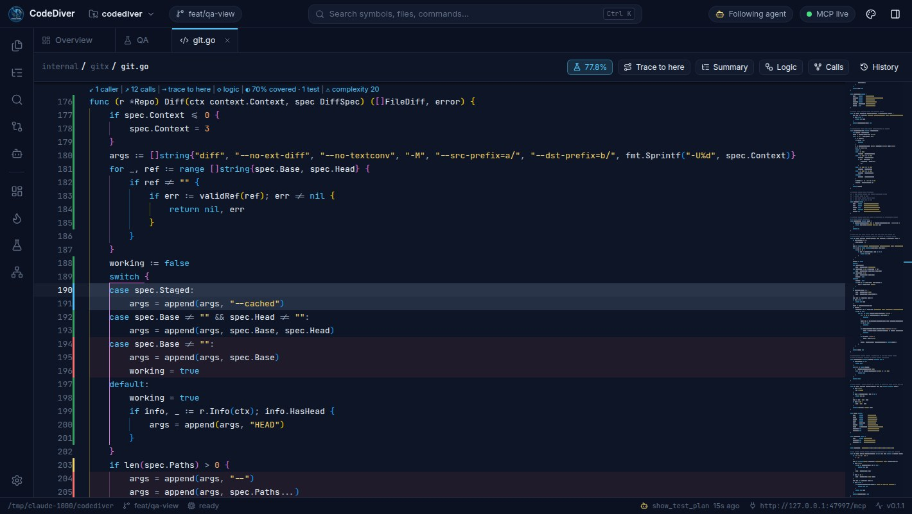
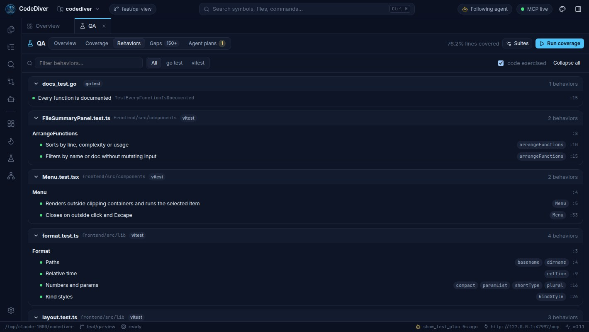
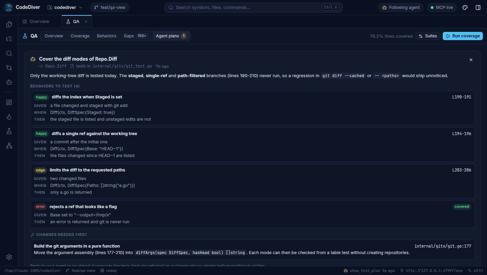

You can't see what it sees
The agent reads your whole codebase. You get a stream of text about it, and point at code by pasting it back in.
Collaborative development with AI · Open source
CodeDiver is a workspace you share with your coding agent. It sees the code you have open, shows you what it means right on your screen — walkthroughs, call graphs, test gaps — and brings every change to you to decide. Work at the agent's speed without losing the thread.
Works with Claude Code, Cursor, VS Code, Claude Desktop, Codex — anything that speaks MCP. macOS, Windows and Linux.

The agent reads your whole codebase. You get a stream of text about it, and point at code by pasting it back in.
Hundreds of lines land as a diff to skim. You end up approving work instead of shaping it — skimming, then trusting, then guessing.
When something breaks at 2am, it's your codebase. The mental model has to live in your head, not in a chat history.
CodeDiver turns the chat into a shared screen: you both look at the same code, the agent shows its work, and you make the calls.
How it works
Your agent keeps working in your terminal or editor. CodeDiver is the screen you share: it shows the agent where you are, and shows you what the agent means.
The agent knows the file, line, selection and function you have open. Ask about “this function” and it knows which one.
Animated demos, walkthroughs, function logic and call paths open on your screen, linked to the real code. Demos →
Changes arrive as visual proposals with their blast radius. Accept, reject or send feedback, file by file. Decide →
See what the tests actually cover, where the risky gaps are, and agree on a test plan before it's written. Test →
Explain the function I have open — what goes in, what comes out, and how it works.
get_developer_context→ views.go · Service.Diffget_function_flow→ 16 blocks, 5 inputs, 2 outputsexplain_function→ shown in CodeDiverI've opened the logic view for Service.Diff. Each step on the right is pinned to the block it describes — start at step 1.
What actually calls this?
trace_toshow: trueEvery path from the entry points is on your screen now.

Demos New in v0.2.0
Ask “show me how a request moves through our CDN” or “animate how a sensor reading gets encoded”, and your agent builds an animated, step-by-step demo on your screen.



Explain
Ask “walk me through how a request reaches the database” and your agent builds a guided tour you can step through at your own pace.
The point isn't for the agent to know your codebase. It's for you to.
Before you accept a change, or after someone merges one, ask your agent to tour it. It visits each changed function in the order that makes sense: the cause, the fix, and the test that proves it, each highlighted in the real code with a map of where you are.
Review a change by understanding it, not by scrolling a diff.

Agents can draw sequence, flow, class and state diagrams with Mermaid — or interactive graphs whose nodes open the code they describe. Architecture stops living only in someone's head.

Decide
Agents submit changes as proposals, and nothing touches your code until you accept. You review them visually, and your feedback goes straight back for the next round.


Validate: flagged for review.Next to every diff: how many changed lines tests run, which lines no test runs, and the tests that call or reach the changed code. Click Run these tests to measure which test runs which line, or ask your agent to write the missing ones.
Agents see the same report with get_tests_for_change, for a proposal, the working tree or any commit.

Test Improved in v0.2.0
Agents write tests fast. CodeDiver shows you whether they test what matters, and what's still exposed.
Reviewing a change? Its tests and their coverage open next to the diff. See Decide →



Ask “what isn't tested here?” and your agent reads coverage over MCP, then puts a test plan on your screen: the behaviors to cover as given / when / then, tied to the lines they exercise, plus any refactor the code needs first. When you agree, it proposes the tests as a change set you review.
Coverage runs happen only when you click Run. Agents read the results; they can't run commands.

show_test_plan.On your own, too
Everything the agent can show you, you can open with a click.


Get started
CodeDiver indexes it locally — call graphs, types, control flow, git history. Nothing leaves your machine.
One command adds CodeDiver as an MCP server. Your agent can now see the code the way you do — and show you things.
claude mcp add --transport http --scope user codediver http://127.0.0.1:47474/mcp
Ask “walk me through this” or “fix that bug”. The agent opens views in front of you, explains as it goes, and proposes changes you accept or reject.
Connect
CodeDiver runs a local MCP server with 35 tools for seeing, explaining, proposing and testing. Add it to your agent with one line.
CodeDiver runs a local MCP server at http://127.0.0.1:47474/mcp. Stdio-only clients use the built-in bridge: codediver mcp.
claude mcp add --transport http --scope user codediver http://127.0.0.1:47474/mcp// ~/.cursor/mcp.json
{ "mcpServers": { "codediver": { "url": "http://127.0.0.1:47474/mcp" } } }// .vscode/mcp.json
{ "servers": { "codediver": { "type": "http", "url": "http://127.0.0.1:47474/mcp" } } }// claude_desktop_config.json
{ "mcpServers": { "codediver": { "command": "codediver", "args": ["mcp"] } } }# ~/.codex/config.toml
[mcp_servers.codediver]
command = "codediver"
args = ["mcp"]
Know what you're looking at before answering.
get_developer_context the file, line, selection and function you have openrepo_overview languages, entry points, hotspotslist_repos · list_files · read_fileget_file_summary every function, type and variable in a filesearch_code · search_symbols · get_symbolPrecise answers instead of guesses from grep.
trace_to every path that reaches a functionget_call_graph callers and callees, interface dispatch resolvedget_function_flow the control-flow graph of a functionget_dependencies · get_typesgit_diff · git_log · git_status · get_heatmapget_language_support how precise the analysis is for each languagePut understanding on your screen, not just in chat.
start_walkthrough a guided, step-by-step code tourexplain_function inputs, outputs and logic, pinned to the graphshow_diagram Mermaid or interactive diagrams linked to codeannotate_code inline notes in the editorshow_code open a file and highlight what mattersshow_demo · show_animation · export_demo animated demos, and images of themAgents propose. You decide.
propose_changes a reviewable change set; nothing is written until you acceptget_proposal your decision and feedback, back to the agentAgents can't write files any other way.
Know what's covered before writing more.
get_test_overview coverage, tests and the riskiest gapsget_coverage uncovered lines per file and functionget_tests_for which tests reach a function, and what they checkget_tests_for_change which tests cover a proposal, the working tree or a commitfind_test_gaps untested code ranked by risk, with what makes it hard to testshow_test_plan behaviors to cover and refactors needed, on your screenAgents read results; they can't run commands.
Safety model
.. or symlink escapes; .git, .env*, keys and your own globs are invisible.127.0.0.1, protected against DNS rebinding and cross-site requests. Your code never leaves your machine.Type-checked call graphs with interface dispatch, control-flow graphs, types, variables — no Go toolchain needed.
TypeScript, JavaScript, Python, Rust, Java, Kotlin, C#, C, C++, Ruby, PHP, Swift, Scala, Dart, Lua — functions, classes, parameters, docs, call edges and imports.
Syntax highlighting, search, git history and diffs, heatmaps, proposals, walkthroughs and agent explanations.
What's precise, what's matched by name (~), and the known gaps for each language →
Releases
Every release is built and tested in CI on macOS, Windows and Linux, with checksums for every download.
Demos, and tests for every change.
Free and open source under the MIT license.
curl -fsSL https://raw.githubusercontent.com/aitakemyjob/codediver/main/scripts/install.sh | sh Universal app for Apple Silicon & Intel. Linux: .deb, .rpm, .tar.gz (x64, ARM64).
irm https://raw.githubusercontent.com/aitakemyjob/codediver/main/scripts/install.ps1 | iex Installer or portable .exe. Uses the WebView2 runtime built into Windows.
codediver serveThe same UI in your browser — great for remote dev boxes. Binaries for every OS and architecture.